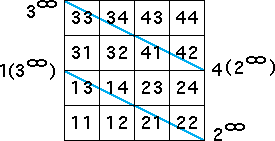

| Let's try to generate the lower line of the two lines without the upper. |
| Looking at the length 2 address squares |
|  |
| we see these transitions must be allowed |
| 3 → 1, 4 → 1, 1 → 2, and 2 → 2 |
| Here are the table and the graph. From the graph it should be clear that this IFS generates
only the fixed point 2∞ |
|
| Experiment with adding some of the other transitions. How do the lines of the
pair build themselves? |
| Here we summarize the information gathered so far about whether members of pairs of
lines can be generated independently. |
For the pairs of horizontal or vertical lines with endpoints fixed points and
their images, the line whose endpoints are fixed points could be produced by itself,
but the other line could not. |
For the pairs of horizontal or vertical lines with endpoints a 2-cycle, neither
line could be produced without the other. |
Now we see that neither member of a pair of slanted lines can be
generated without the other. |
| What else will we find? |